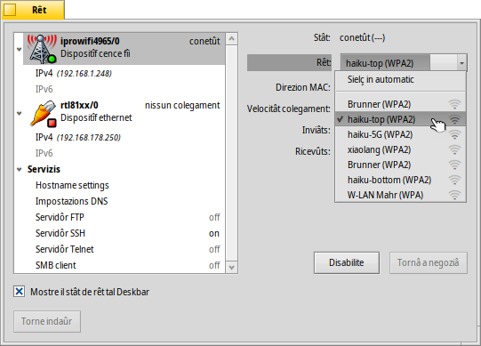
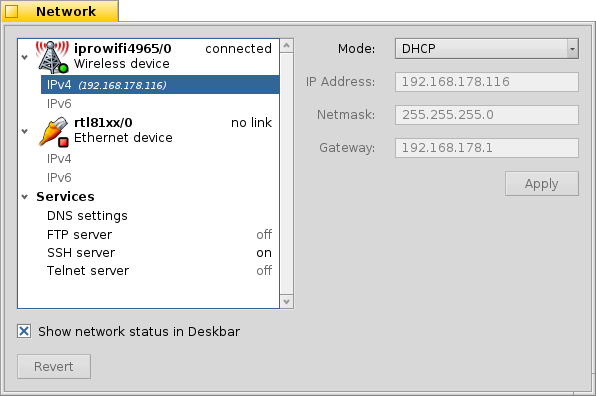
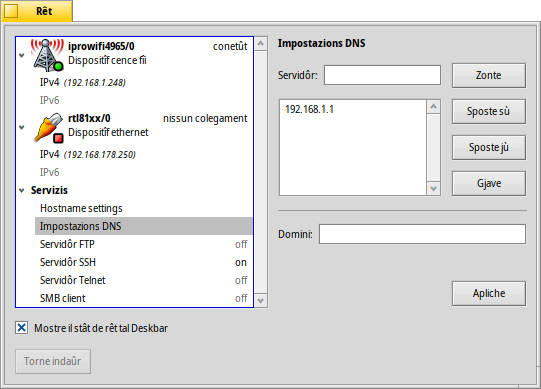
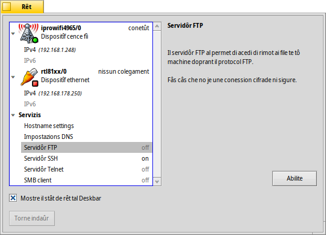

Rêt
Rêt
| Deskbar: | ||
| Posizion: | /boot/system/preferences/Network | |
| Impostazions: | /boot/system/settings/network/ |
Lis preferencis di Rêt a son l'unic panel par configurâ ducj i servizis e i dispositîfs di rêt disponibii. A çampe si à une liste che si pues striçâ dai tiei dispositîfs e servizis, a diestre si à informazions o impostazions pe vôs selezionade.
In bas tu cjatis une casele di selezion par fâ. al puarte indaûr aes impostazions che a jerin ativis cuant che si à inviât il panel.
Dispositîfs
In cheste figure o viodin i dispositîfs cence fîi, che a doprin il driver iprowifi4965. Dal menù a tende tu selezionis la rêt wireless dulà tacâti. Dopo il non di ogni rêt WLAN (cence fîi), ti ven mostrade une piçule icone che e rapresente la fuarce dal segnâl.
Une volte selezionade la rêt cence fîi, Haiku al cirarà di conetisi in automatic a ogni inviament di sisteme. Selezione e lui al cirarà di conetisi ae rêt cence fîi cul segnâl plui fuart lì ator.
Se tu ti stâs conetint a une rêt protete, ti vignarà domandade la peraule di ordin e se permeti chê conession dome une volte o simpri, se chest al è il câs, al salvarà la peraule di ordin in mût di no jessi disturbât plui par inserîle.
I botons sot ti permetin di fâ: il dispositîf o la conession.
Sot di un dispositîf tu cjatis une liste di protocoi disponibii, IPv4 e IPv6:
Dal menù a tende tu stabilissis la modalitât par assegnâ i parametris vitâi de rêt: , and . Tu puedis sielzi par otignî la configurazion in maniere dinamiche de tô rêt (vie router etc.), o specificâju di bessôl selezionant e fracant cuant che tu âs finît.
Lis impostazions par un dispositîf tethered (colegât pe condivision de conession) a son similârs, cence il menù a tende pe conession WLAN, logjic.
Servizis
Impostazions DNS
Se tu stâs doprant DHCP la direzion IP par un servidôr DNS e il domini a vegnin dâts de tô rêt (router etc.). Tu puedis zontâ e gjavâ altris servidôrs DNS e decidi la lôr prioritât spostantju sù e jù inte liste cui botons ae sô diestre.
al ativarà lis gnovis impostazions.
FTP, SSH, Telnet
Haiku al furnìs cualchi servidôr, su di chei tu puedis fâ o . De bande diestre dal barcon, tu cjatarâs informazions su chel particolâr servidôr che tu varessis di lei cun atenzion: Il servidôr FTP e chel Telnet no son sigûrs e no son cifrâts. Come sielte predefinide, a son distudâts e si varessin di impiâ dome se si è cussients dai risis di sigurece.
I file des impostazions
Lis impostazions di rêt si cjatin inte cartele /system/settings/network/. Di solit no ti varès di impuartâ, almancul che no tu vessis di eliminâlis par tacâ dal principi, parcè che dute la configurazion e je lade strucje...
Un file dut câs al pues jessi une vore util, in particolâr cuant che si lavore dal Terminâl. Il file hosts ti permet di definî i alias a specifichis direzions IP inte rêt. Par esempli:
127.0.0.1 localhost #loopback 192.168.178.3 NAS #Synology 192.168.178.102 XIOS #Mediaplayer
In di plui al loopback che al ponte a localhost, jo o ai l'IP dal gno archivi rimot Synology, sot il non di "NAS" e chel dal gno riprodutôr multimediâl sot il non di "XIOS". Par tacâ une session FTP cul gno archivi rimot te rêt, no ai bisugne di visâmi la direzion IP, ma mi baste scrivi:
ftp NAS